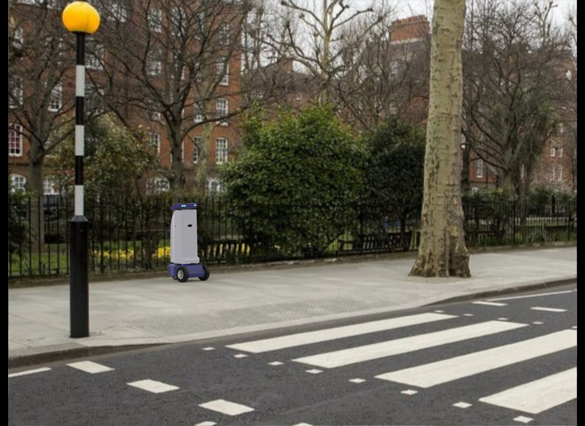
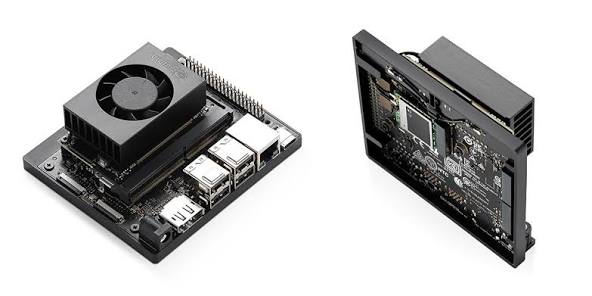
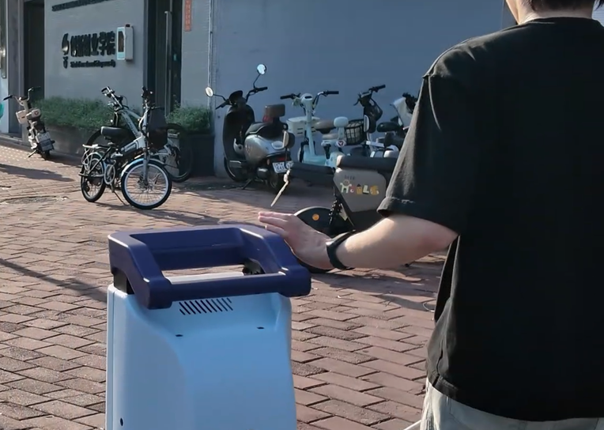
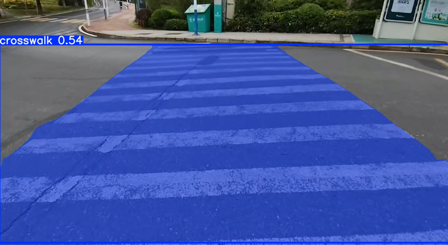
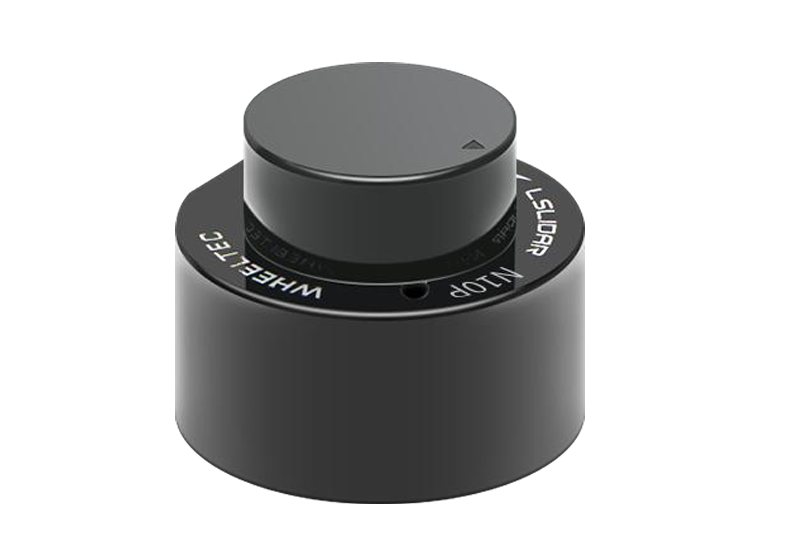
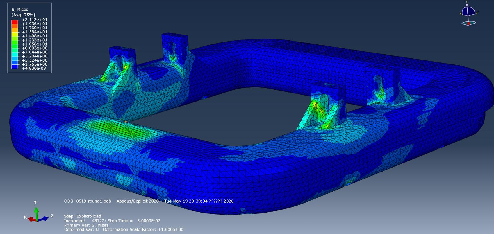
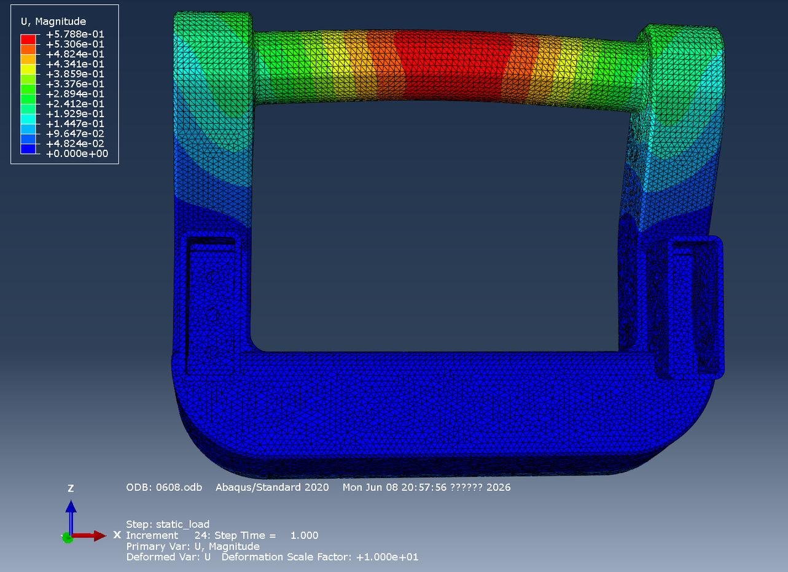
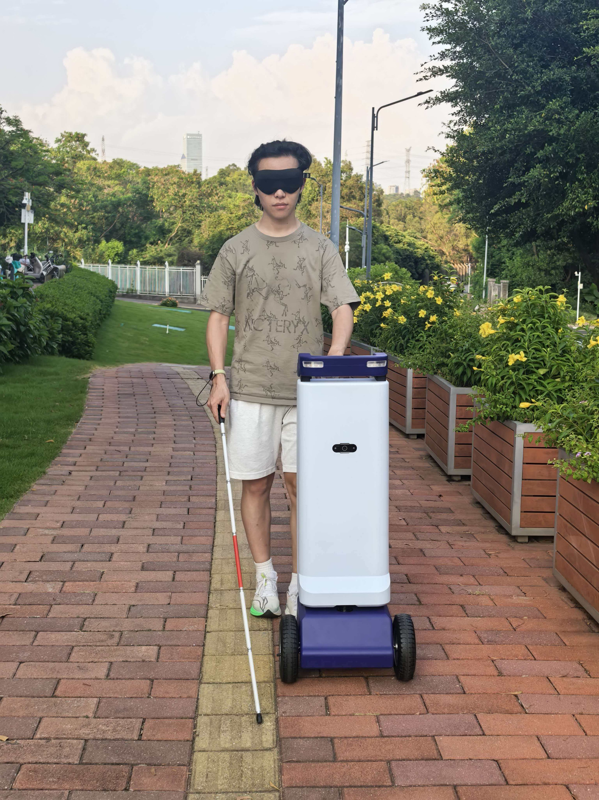
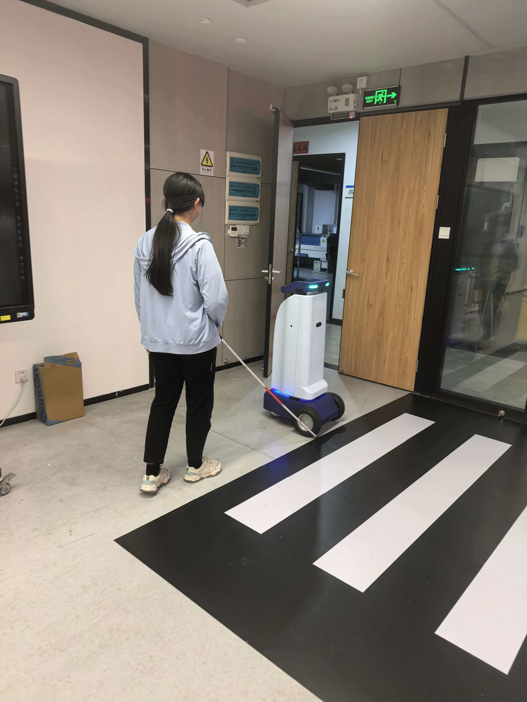

Street-crossing robot for visually impaired pedestrians
A crosswalk-deployed robot that provides a continuous physical guide, detects the crossing environment, and communicates through handle force, vibration, audio, and lighting.

01Provide a continuous guide
The concept addresses a specific gap at crosswalks: information alone does not provide continuous spatial guidance. The robot approaches the service position, helps the user locate and grasp the handle, monitors the traffic signal, guides the crossing, and then returns.
The intended users are independent visually impaired pedestrians, including people who use a white cane. The product is a prototype, not a certified mobility aid.

02Build a layered control system
- PerceiveCamera and LiDAR detect crosswalks, signals, and obstacles.
- DecideService state and safety logic select the next action.
- ControlOuter force control and inner velocity control move the base.
- CommunicateVoice, vibration, handle force, and lights expose system state.


03See the crossing and nearby obstacles

The path pipeline uses a segmentation model trained on more than 200 images, extracts the left and right crossing boundaries, fits a centerline, and controls yaw and lateral offset. LiDAR points are segmented by arc length, associated across frames, and filtered before estimating obstacle motion.
The presentation describes the processing pipeline and demonstrations; it does not report a benchmark accuracy for the complete perception system.

04Check the handle under load
My contribution focused on the only continuous physical connection between user and robot. I modeled two cases in Abaqus using the presentation’s engineering-resin properties and constraints at the screw connections.


Using a tensile strength of about 60 MPa, the presentation estimates a dynamic safety factor of approximately 2.86. This is a simulation result under stated assumptions, not a certification test.
05Make state perceptible

Service stages are communicated redundantly: positioning audio helps locate the robot, a sustained grasp confirms readiness, vibration and sound mark service start, handle force supports speed adjustment, and external lights communicate intent to nearby pedestrians.
Lighting follows familiar traffic associations and changes before movement so the robot’s actions are more predictable in public space.
06Learn from a real user
Feedback from a visually impaired participant was positive about acceleration, travel speed, handle comfort, white-cane clearance, and cognitive load. The same session exposed unresolved issues: clearer prompts to grasp the handle, a better way to locate the robot, and more understandable stopping and restarting at the waiting area.
The team subsequently added a waiting-area voice alert and changed the robot’s guiding sound. A single feedback session is formative evidence, not a general usability conclusion.
